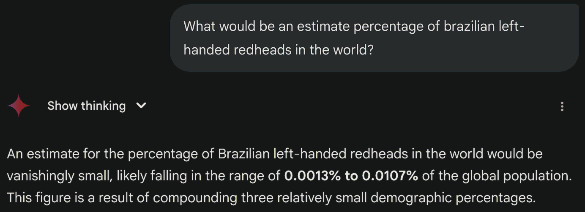

Rodolfo Recordon | WDD 130
I know every person is unique, but I am trying hard on this one. I am a left-handed
Brazilian redhead 👈🏻 🇧🇷 🧑🏻🦰.
What?!?!? ... Not convinced? Ok, I got this!
I am a member of The Church of Jesus Christ of Latter-Day Saints 😎.
... Come on! What are the odds?
Well, this is me. It may not look like much, but thank you for getting to my webpage to get
to know me a little better.
P.S.: Here is what my buddy Gemini has to say about this.
